网络层概念问答
1.网络层的主要功能有哪些？
路由：决定路由器向哪个地方发包
转发：错误检测、排队、调度
在某些网络中存在第三个重要功能(如ATM网络)：连接建立；连接两个端，而传输层是连接两个进程
2.简述网络服务模型。
从主机角度被称为Qos(服务质量)
独立的包：保证交付、保证低延迟的交付
流包：顺序交付、保证流的最小带宽、对包中内容的修改限制
ATM网络的服务模型：CBR(恒定比特率)、VBR（可变比特率）、ABR(可用比特率)、UBR（未指定比特率）
因特网的服务模型：尽力而为
3.路由器的性能度量。
capacity=N*R，其中N是外部端口的数量，R是每个端口的传输速率
路由器的种类不同，能力不同；核心路由器R速率可达10-400Gbps,NR Tbps量级，边缘路由器1-100Gbps，商用1Gbps
4.描述路由器的内部架构。
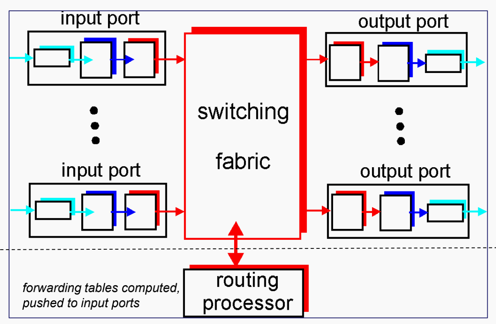
上层是负责数据的转发，用硬件实现；下层是路由的计算，控制平面，是软件和硬件的结合。
输入端口：接受到来的包；更新IP头部；查找输出端口；排队等待进入交换结构
5.路由器如何匹配路由表?
采用最长前缀匹配原则，为了加速，采用树形结构匹配。记录最后一次匹配的结果为最终结果（树的最底下）；采用硬件实现
6.简述路由器输出端口功能。
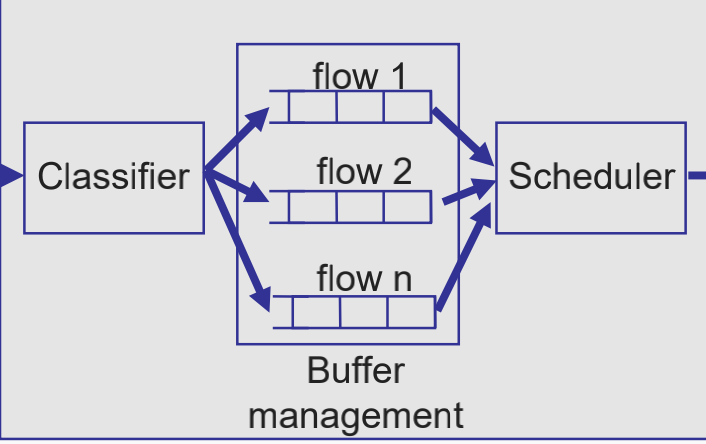
1.分类：决定包到哪个端口去；可以根据头部内容，如包的协议，类型，地址等
2.缓冲区处理：决定是否丢弃以及何时丢弃
3.调度：决定如何从缓冲区取出包转发出去；公平性、优先级、快！
例如：FIFO路由器
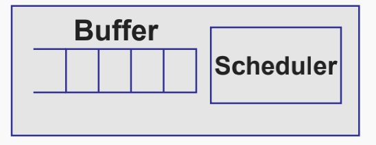
可能的调度方式：优先级（非高中低优先级调度）、FQ、WFQ
7.路由器内部有哪些交换结构？
- 共享内存，但受限于内存的访问速度
- 总线，受限于总线的带宽
- 通过一个网格结构，速度较快
8.比较电路交换和包交换。
电路交换：为“呼叫”保留的端到端资源；需要建立消除、保证的性能、专用资源
包交换：共享资源、切分成包、资源竞争、存储转发、存在拥塞现象
包交换网络要求传输简单，终端‘智能’；电路交换相反
9.如何建立虚电路连接？
每个包携带一个VC识别码；路由器维持每个连接‘状态’；为每个VC预留资源
路由器维持一个转发表：Incoming interface|Incoming VC|Outgoing interface |Outgoing VC
10.简述互联网地址。
链路层地址MAC，IP地址，应用层地址
单播地址、多播地址、广播地址、任意波地址
11.简述IP的一些操作
包的生命周期：TTL
切片重组、差错控制采用ICMP包
流控：丢弃包+ICMP
12.IPv4的头部。
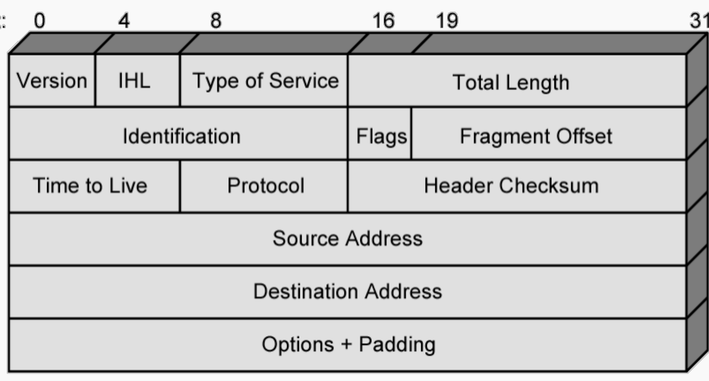
IHL:头部长度
服务类型：3bit优先级；1bit可靠性；1bit延迟；1bit吞吐量高低；总长度：数据报长度；Identification：序列号
最大长度：65535字节
13.简述IP包的碎片化。
由于每个链路有MTU，而包的大小超过MTU，从而需要将其切分。在网络层的切分给个小片段需要加上IP包头，然后在送往上层协议的时候需要组装。
如何重新组装：需要识别码来识别是哪个包；需要序列号以防丢包；需要最大序列号保证直到结束了
这里利用IP包里的flag表征moreflag；1为还有包，0为没包了，即为最后一个包；注意len通常是8字节的倍数
接受端开足够的buffer来组装包。
14.简述IPv4格式分类。
A类：0开头、7位网段、24位主机数 ；全0保留
B类：10开始，14位网段、16位主机
C类：110开始，21位网段，8位主机
127.*.*.*用于回环测试
15.描述无类别的域间路由CIDR。
利用子网掩码，如10.217.112.0/20，子网掩码为255.255.240.0
子网划分可以通过子网掩码一级一级划分。
16.简述NAT是什么，以及它的作用？
网络地址转换，允许内部和外部流量采用不同的IP地址。地址的转换发生在对外的接口处。
使得子网更加独立，并且可以扩充更多IP地址的使用。
静态NAT：私有地址映射到一个保留的公共IP地址。通常用于内部服务器主机。
动态NAT：NAT路由器保留一些列IP地址，需要的时候分配给主机。通常用于个人客户端。
NAPT：网络地址端口转换：将运输层端口号以及IP地址同时做转换
在P2P网络中，需要用到中继器去连接NAT之后的主机和外部主机。但是违反了端到端原则。
17.简述ICMP包以及其作用。
用于主机路由器们之间的错误和控制消息传递。封装在IP包头之上，有类型、检验和、code等信息，其中协议=1为IP
有请求回复，错误报告等，分别对应一定的码。
ICMP的例子：
Ping:echo request/reply；可以利用TTL归零，实现Traceroute，但是如果动态路由就不行了。分别发1，2，3，4序列的包注意每次重复发三次。
还可以通过ICMP决定路径上的最小MTU：方法：
首先发大包，如果参数错误则相应的减小包的大小，直到能够成功到达目的地。
18.简述移动IP。
移动设备会使得IP发生变动，但是如果建立了TCP，IP变动会造成TCP重新建立。
实体：移动节点、通信节点、归属代理（维持一系列注册的节点信息）、外部代理（与移动节点连接的服务器）
采用三角路由的方式：移动节点直接发送消息给通信节点，而通信节点通过归属代理间接发送包给移动节点。
三个能力：
发现：外部代理发送ICMP路由广告通知自己的存在；移动节点可以选择性发起广告request，或简单等待广告
注册：移动节点请求外部代理分配地址并要求本地代理发包给外部代理；需要四步：
移动节点发送注册请求、外部代理转发到本地代理、本地代理发送注册回复、外部代理转发回复
建立隧道：在本地代理和移动节点建立隧道，采用间接路由的方式，在IP上再包一层IP
19.IPv4与IPv6的比较
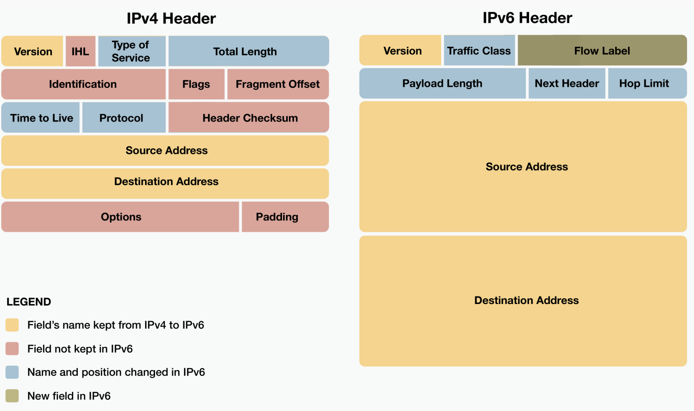
流量类型：包的类或优先级，识别Qos；可以被更改
地址128bit
流标签：识别流
负载长度：IP包头之后的数据长度
IPv6不切割包，由端处理。太大了就发送ICMPv6错误报告。
IPv6没有广播。
IPv6没有ARP，采用多播和ICMPv6作“邻居发现”
总结:
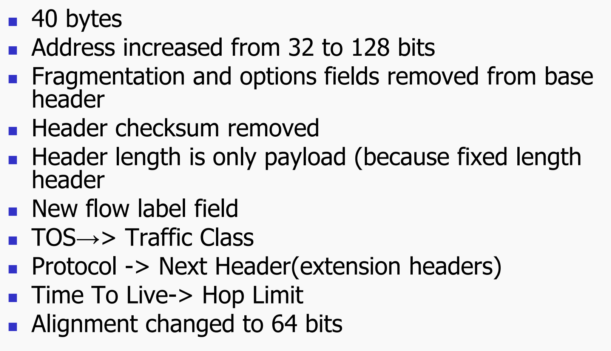
20.如何做到IPv4到IPv6的转换。
双栈协议+隧道
21.路由功能的一些前置小点。
- 性能标准：采用最小跳数，或者采用代价：最小时延/最大吞吐量
- 路由决定时间：数据包网路每次发包时；VC网络刚建立时
- 建立的两种方式：有中心的；分布式的
- 一个节点可以得知哪些信息：本地信息/分布式则邻居信息/全部节点信息
- 什么时候更新：固定的时间/固定不更新/网络结构发生改变的时候
22.有哪些不同的路由策略？
中心的（固定的配置的）：决定路由最小代价算法
分布式的：洪泛、随机、自适应
洪泛：每个路由广播包，会造成洪泛（TTL解决），但是这样总有一个最短路径，并且所有路由器都能够被访问。
随机路由：随机选一个，虽然不是最最优，但是不需要额外的信息，适用于强连接的网络；可以分配链路概率为代价的占比。
自适应：路由器每个端口给出一个偏置指明方向，然后选择偏置+Q，Q为最短排队长度，这样适合于拥塞情况。
24.Dijstra算法的解题步骤。
又称链路状态；如果代价是负载，可能会出现震荡现象。
1。列表格，列表示轮次（点的个数），行记录T，L（i），Path
如下图：
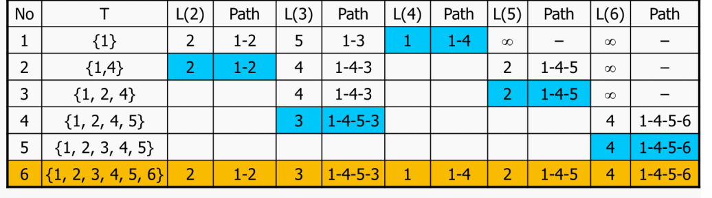
2作出最后的转发表，下一跳路由以及距离
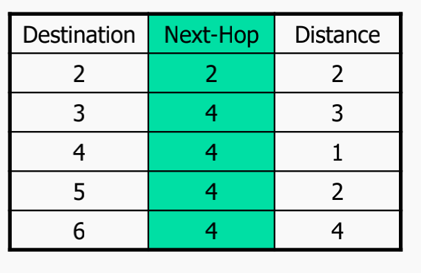
一般复杂度n方，高效的nlogn
25.Bellman-Ford 算法的解题步骤。
1.列表格，列表示h，从0-n-1;$L_h(n)$表示源到n不超过h条路径的最大路径长度，所以更新规则可以列为如下：
$L_h(n)=min_j{L_{h-1}(j)+w(j,n)}$
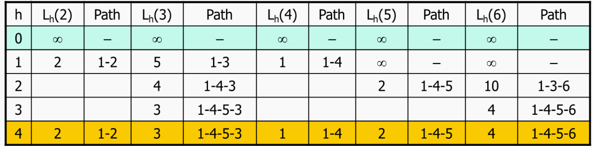
2.作出转发表。
26.简述距离向量算法DV
上面所说的算法是单源的(ppt)，距离向量算法是分布式的。每个节点维持一个距离向量，如x节点维持$D_x$向量，$D_x(y)$表示x-y的最短距离。
每次更新：x节点获取其邻居的距离向量，更新自己的距离向量$D_x(y)=min_j(w(x,j),D_j(y))$
27.简述DV算法如何解决链路故障和链路费用改变。
当某个链路费用下降时，不会又影响；但是某个链路费用上升时，可能更新会发生无穷计数。x告诉y经过y到z最短，y说到z经过x最短。
解决办法：毒性逆转：如果x到z通过y，那么告知y，x-y距离为无穷。但是仍然无法解决无穷计数问题，3个或更多节点的环仍然存在该情况。
28.比较DV和LS算法。
LS:链路状态会洪泛到其他节点；需要用到完整的网络拓扑。
29.互联网三个阶段的路由算法。
第一阶段采用输出排队长度作为链路代价，采用DV算法。
第二阶段采用测量到的时延作为链路代价，采用LS算法。
第三阶段采用跳正则度量作为链路代价，采用单服务器排队模型：
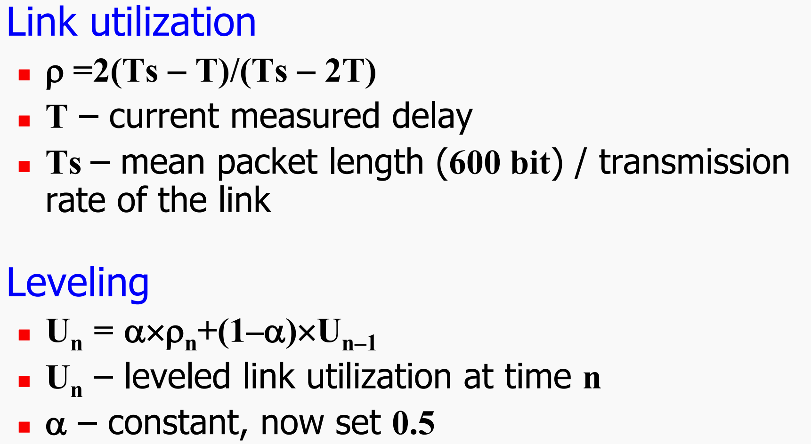
采用链路利用率表示链路的状态。
30.简述具有层次结构的路由小点。
- 划分区域——自治系统
- AS内部运行相同的内部自治系统路由协议
- AS之间运行相同的外部自治系统路由协议
- 网关路由：与外部IS相连的路由
- 每个AS有自治号。
- 协议分类：IGP、EGP内部/外部网关协议
31.简述RIP协议。
采用DV算法，每个路由器定期发送RIP报文，采用UDP，用传输层实现路由协议。
排队长度也在代价的考虑中
32.简述OSPF协议。
采用链路状态协议。每个路由器经常通告链路状态。
优点：安全；支持多条路径；多种代价准则；综合支持单播多播；层次
可以划分区域分别作OSPF；主干区域用于连通其他下层区域
有四种通告：
路由链接通告：洪泛链路状态；网络链接通告：指定路由器加入网络；总结链接（summary link）:区域边界路由器用于其他区域路由
AS外部链接通告：ASB路由器用于AS路由
31.比较RIP和OSPF。
RIP ：
- 配置简单，适用于小型网络（小于15跳）
- 可分布式实现
- 收敛速度较慢
- 网络是一个平面，不适用于大规模网络
OSPF：
- 收敛速度快，无跳数限制
- 支持不同服务类型选路
- 支持身份认证
- 支持层次式网络，适用于大规模复杂网络
- 集中式算法
- 每个节点需要维护全局拓扑
- 配置复杂
32.简述AS之间的关系。
AS间路由要求自治，涉及政策和商业关系。存在对等、用户-客户关系。无法通过不对等的提供商AS间路由。
33.简述BGP协议。
是外部路由协议。外面的AS通告本AS有哪些子网是可达的，子网采用前缀形式表达。
BGP类似于距离向量，但是有四个不同：
- 不选择最短路，依据政策
- 发送距离向量和路径向量；可以更加灵活的依据政策，并且可以避免环。
- 选择性的发送通告，满足了商业上的目的，不给其他AS通过其的权利
- BGP可以对子网聚合
对外BGP采用eBGP会话，对内采用iBGP会话；从而实现如下功能：
- 使用eBGP学习外部路由
- 使用iBGP在内部分发外部路由信息
- 使用IGP选择最短路径
BGP的基本消息：Open(建立)、Notification(报告异常情况)、Update、Keep-alive
格式：**
一些重要的路由属性（有些并不在公告中展现）
- ASPATH：路径信息
- LOCAL PREF：选择偏好值
- MED：多出口鉴别，有多近
- IGP cost：选择最小代价内部路由，热土豆路由
一些特点：
- 主要用于表示路由的可达性，不一定走最短路径路由
- 通过携带AS路径信息，可以解决路由循环问题
- 使用TCP协议，端口号179，可实现协议的可靠性
- BGP 协议交换路由信息的结点数量级是自治系统数的量级。
- 由于自治系统中 BGP Speaker（或边界路由器）的数目是很少的，使得自治系统之间的路由选择不致过分复杂。
- 支持 CIDR，可以进行路由聚合。
- 在BGP 刚刚运行时，BGP 的邻站交换整个的 BGP 路由表。但以后只需要在发生变化时增量更新有变化的部分，减少开销。
34.IP组播的职能有哪些？
发现组播组的存在；识别组员之间的链接；建立包的路由状态（包从哪些端口出去）
35.IP组播的架构是什么？
主机与连接的路由器IGMP协议，路由器与源组播路由协议
36.简述组播地址分配？
• 224.0.0.0～224.0.0.255为预留的组播地址（永久组地址），地址224.0.0.0保留不做分配；
• 224.0.1.0～224.0.1.255是公用组播地址，可以用于Internet；
• 224.0.2.0～238.255.255.255为用户可用的组播地址（临时组地址），全网范围内有效；
• 239.0.0.0～239.255.255.255为本地管理组播地址，仅在特定的本地范围内有效。
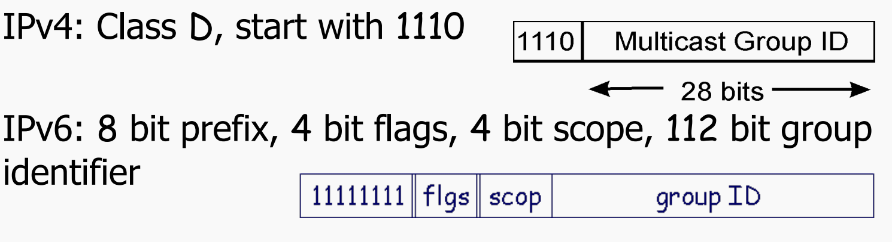
组播mac地址的高24bit为0x01005e，mac 地址的低23bit为组播ip地址的低23bit。
37.如何维持一个组播组？
本地网络：通过IGMP报文
外部网络：通过路由器建立生成树互相交流。
38.简述IGMP协议。
主机：发送report去join；不需要显示的脱离
路由器：显示的发送query，需要接受report
两种特殊的地址：224.0.0.1子网上的所有组；224.0.0.2子网上的所有路由器
1在一个局域网上，路由器定期向224.0.0.1发送Membership Query
2当接收到时，每个主机为其所属的每个组播组启动随机计时器(0~10s)
3当组G的主机计时器归零时，它会向组G发送成员（report）身份报告
4.同一组的主机听到报告则放弃计时
5 路由器会听到所有的报告，并超时无响应组
v3版本的IGMP允许主机维护一个接受列表，从列表外的源来的包被阻断。
Membership Query：由组播路由器发送。有三种：
- general：问哪个组有成员
- group-specific：给定组有没有成员
- Group-and-source specific：是否指定的源可以发给指定的组
其包格式
：
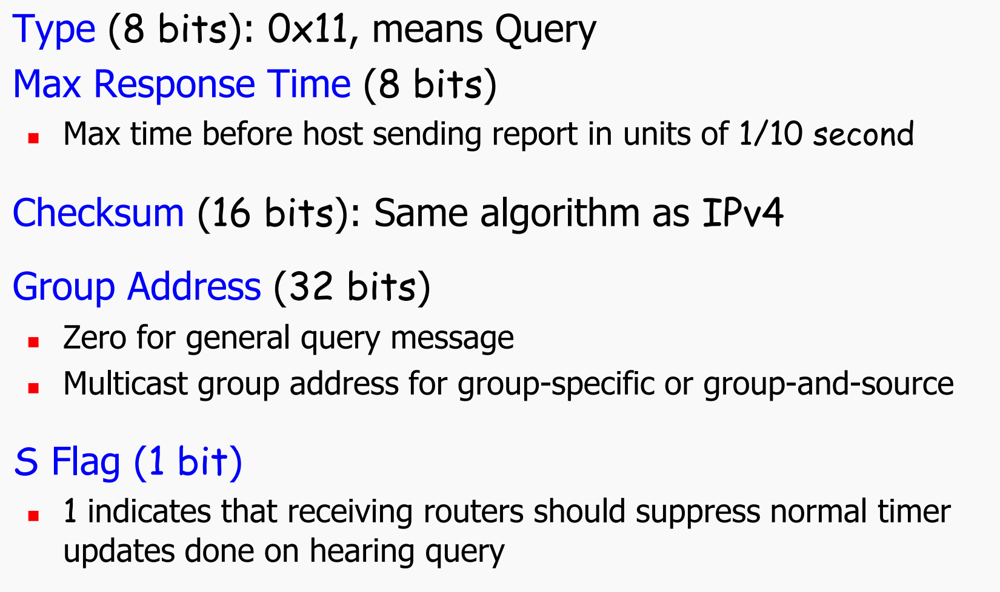
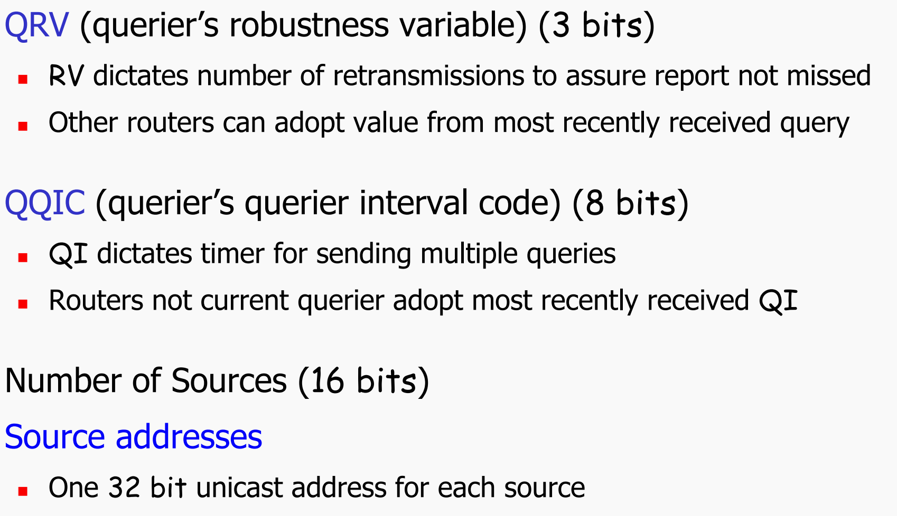
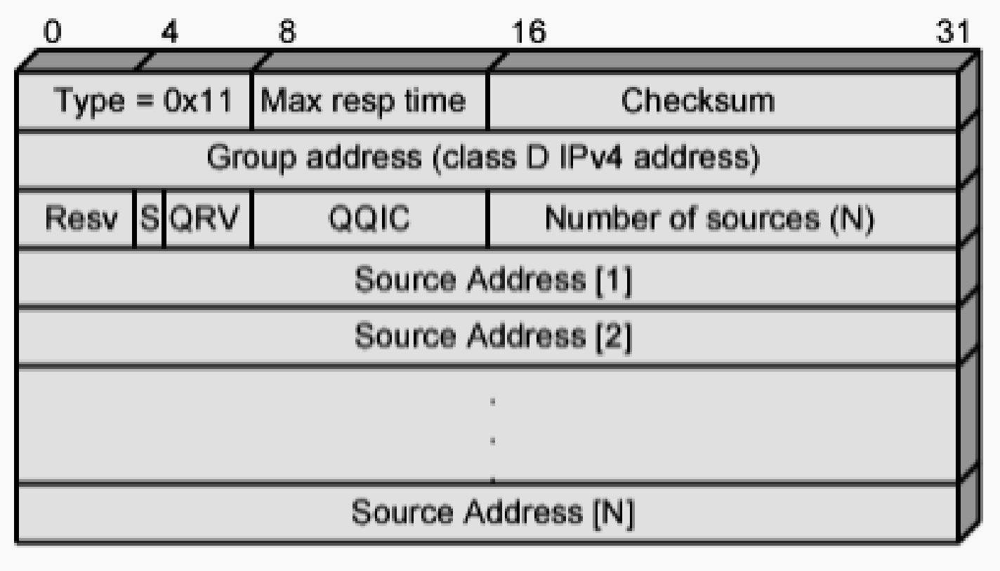
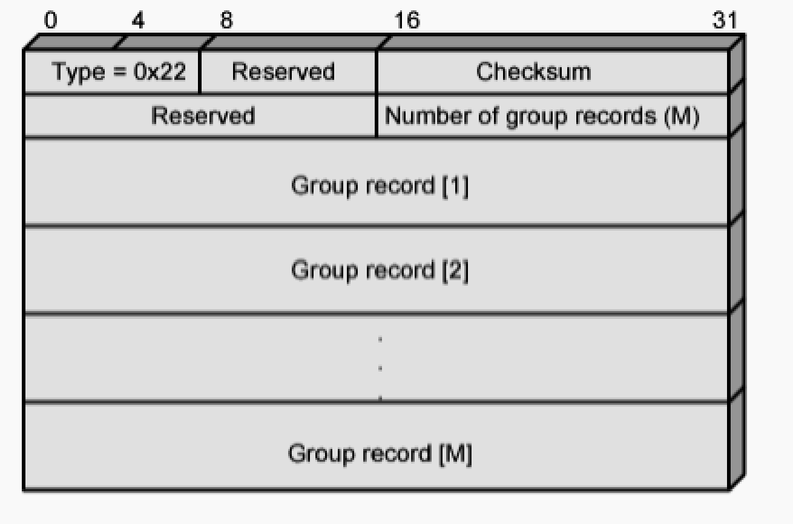
record格式：
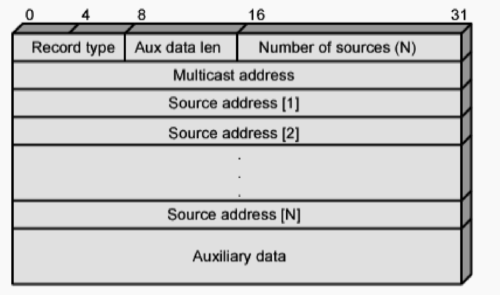
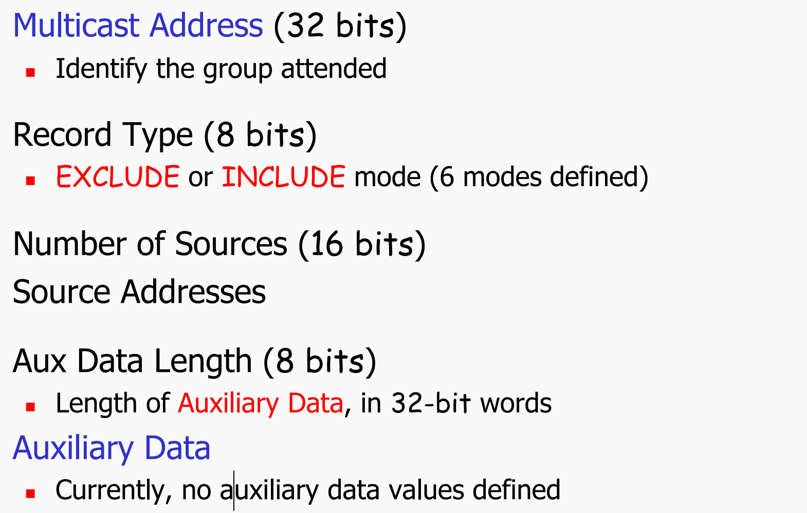
39.组播路由有哪些方法？
共享树：所有成员共享同一棵树
基于源的树：每个发送者不同的树
40.简述基于源的树。
源通过最短路径（OSPF协议）得到到没个节点的最短路径，路径作为树的路径。
反向路径转发：如果包从源到路由器的最短路径上来，则该路由器从其他所有端口转发。采用RIP
剪枝：从没有向下传播的组成员向上发送prune信息包，把路径给剪掉。
41.简述分享树。
Steiner 树：建立最小生成树，包含组播路由器
基于中心的树：边缘路由器发送join-msg 给中心节点，要么路径直接与中心节点相连，要么与已在路径上的点相连。
42.有哪些组播路由协议。
VMPR：基于RIP，采用洪泛和剪纸；基于源的树；采用软状态
MOSPF：LS；
PIM：
稀疏模型：采用基于中心的树
密度模型：采用洪泛和剪纸；基于源的树；采用软状态